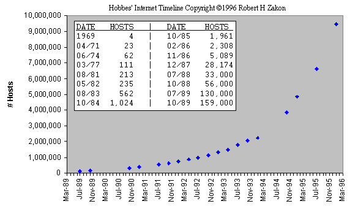

Stephen McGrath
History and structure of the Internet assignment 2006
Where did the Internet come from?
The United States Military started the Internet in the 1960's. It was used as a computer network for thousands of government employees around the world to communicate. Science and Technology researchers were the first non-military users of the Internet. In the early 1990's the government changed polices that restricted private and business uses of the Internet. By 1992 dozens of new companies offered direct Internet access to individuals. (1)
The ancestor of the Internet was the ARPANET, a project funded by the U.S. Department of Defense (DOD) in 1969. The ARPANET was both an experiment in reliable networking and an effort to link DOD and military research contractors, including the large number of universities doing military-funded research. (ARPA stands for Advanced Research Projects Administration, the branch of the DOD in charge of handing out grant money. For enhanced confusion, the agency is now known as DARPA -- the added D is for Defense, in case anyone had doubts about where the money was coming from.) Although the ARPANET started small, connecting three computers in California with one in Utah, it quickly grew to span the continent.
The reliable networking part involved dynamic routing. If one of the network links became disrupted by enemy attack, the traffic on it could be rerouted automatically to other links. Fortunately, the Net rarely has come under enemy attack. Cutting a cable during road construction (known in the biz as backhoe fade) is just as much of a threat, however, so it's important for the Net to be backhoe-resistant.
Because the ARPANET was wildly successful, every university in the country wanted to sign up. This success meant that the ARPANET began getting difficult to manage, particularly with the large and growing number of university sites on it. It was broken into two parts:
Beginning around 1980, university computing was moving from a small number of large time-sharing machines, each of which served hundreds of simultaneous users, to a large number of smaller desktop workstations for individual users. Because users had gotten used to the advantages of time-sharing systems, such as shared directories of files and e-mail, they wanted to keep those same facilities on their workstations. (They were perfectly happy to leave behind the disadvantages of time-shared systems. A sage once said, "The best thing about a workstation is that it's no faster in the middle of the night.") Most of the new workstations ran a variety of UNIX, a popular (and, for many versions, free or close to it) type of operating software that had been developed at AT&T and the University of California at Berkeley. The people at Berkeley had a government contract to improve computer networking, so their version of UNIX included all the software necessary to hook up to a network. Because workstation manufacturers also began to include the necessary network hardware, all you had to do to get a working network was to string the cable to connect the workstations, something that universities could do for cheap because they usually could get students to do it. (2)
By the mid-1980s there was a significant market for Internet-based products. In the 1990s we started to see commercial services showing up, a direct consequence of the NSFNet initiative, which started in 1986 as a 56 Kbps network based on LSI-11s with software developed by David Mills, who was at the University of Delaware. Mills called his NSFNet nodes "Fuzzballs."
The NSFNet, which was originally designed to hook supercomputers together, was quickly outstripped by demand and was overhauled for T1. IBM, Merit, and MCI did this, with IBM developing the router software. Len Bozack was the Stanford student who started Cisco Systems. His first client: Hewlett-Packard. Meanwhile Proteon had gotten started, and a number of other routing vendors had emerged. Despite having built the first gateways (now called routers), BBN didn't believe there was a market for routers, so they didn't go into competition with Wellfleet, ACC, Bridge, 3COM, Cisco, and others. The exponential growth of the Internet began in 1986 with the NSFNet. When the NCP to TCP transition occurred in 1983 there were only a couple of hundred computers on the network. As of January 1993 there are over 1.3 million computers in the system. There were only a handful of networks back in 1983; now there are over 10,000.
In 1988 I made a conscious decision to pursue connection of the Internet to commercial electronic mail carriers. It wasn't clear that this would be acceptable from the standpoint of federal policy, but I thought that it was important to begin exploring the question. By 1990, an experimental mail relay was running at the Corporation for National Research Initiatives (CNRI) linking MCI Mail with the Internet. In the intervening two years, most commercial email carriers in the U.S. are linked to Internet and many others around the world are following suit.
In this same time period, commercial Internet service providers emerged from the collection of intermediate-level networks inspired and sponsored by the National Science Foundation as part of its NSFNet initiatives. Performance Systems International (PSI) was one of the first, spinning off from NYSERNet. UUNET Technologies formed Alternet; Advanced Network and Systems (ANS) was formed by IBM, MERIT, and MCI (with its ANS CO+RE commercial subsidiary); CERFNet was initiated by General Atomics which also runs the San Diego Supercomputer Center; JVNCNet became GES, Inc., offering commercial services; Sprint formed Sprintlink; Infonet offered Infolan service; the Swedish PTT offered SWIPNET, and comparable services were offered in the UK and Finland. The Commercial Internet exchange was organized by commercial Internet service providers as a traffic transfer point for unrestricted service.
In 1990 a conscious effort was made to link in commercial and nonprofit information service providers, and this has also turned out to be useful. Among others, Dow Jones, Telebase, Dialog, CARL, the National Library of Medicine, and RLIN are now online. (3)
Now it's today and here we are. Commercial activity on the Net is continuing its unprecedented growth, but that certainly hasn't hurt the scientific, educational, and research networks (which are also growing by leaps and bounds.) The Internet--a combination of the NSFnet, ARPAnet, the CIX, and about 10,000 other networks--will continue to grow and change, meeting the needs of the people who want it, no matter what they use it for. (4)

(5)
References
(1) http://www.pekin.net/pekin108/tech/tutor/q1.html/ This website did not have much information but had a helpful summery of the history of the internet.
(2) http://net.gurus.com/history/ This site had nearly all the information I needed on the history of the Internet
(3) http://www.virtualschool.edu/mon/Internet/CerfHowInternetCame2B.html/ This website had a very detailes history of the internet.
(4) http://www.savetz.com/yic/YIC01FI_6.html/ This website was also helpful.
(5) http://www.comp.leeds.ac.uk/summer/materials/internet_where.html/ I found the diagram on this website